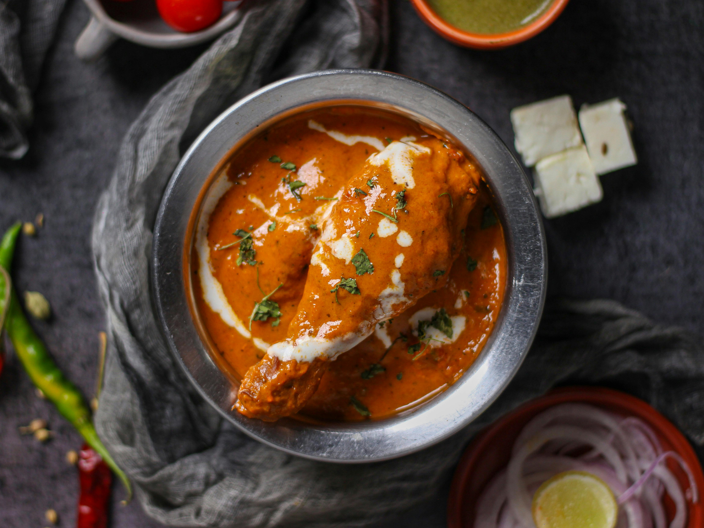

Butter Chicken

Ingredients
- 1 lb Boneless, skinless chicken breast, cut into bite-sized pieces
- 2 tbsp Butter
- 1 medium Onion, finely chopped
- 1 cup Tomato sauce or puree
- 1/2 cup Heavy cream (or plain yogurt for a lighter option)
- 1 tbsp Garam masala
- 1 tsp Mild chili powder or paprika
- Salt to taste
- 1 tbsp oil (olive or any cooking oil)
Instructions
- Heat the olive oil in a large pan over medium-high heat. Add the chicken pieces and cook for 5-7 minutes until they are browned on all sides. Remove the chicken from the pan and set it aside on a plate.
- In the same pan, melt the butter over medium heat. Add the finely chopped onion and cook for 3-4 minutes until it becomes soft and golden.
- Stir in the garam masala and chili powder. Let the spices cook for about 1 minute—it will smell amazing!
- Pour the tomato sauce into the pan and stir well. Let the sauce bubble and simmer for 10 minutes so it thickens up slightly.
- Turn the heat down to low. Slowly stir in the heavy cream (or yogurt) until the sauce becomes a beautiful rich orange color.
- Put the cooked chicken back into the pan. Let everything simmer gently for 5 more minutes so the chicken absorbs the flavors.
- Serve hot with warm naan bread or over a bowl of plain rice.